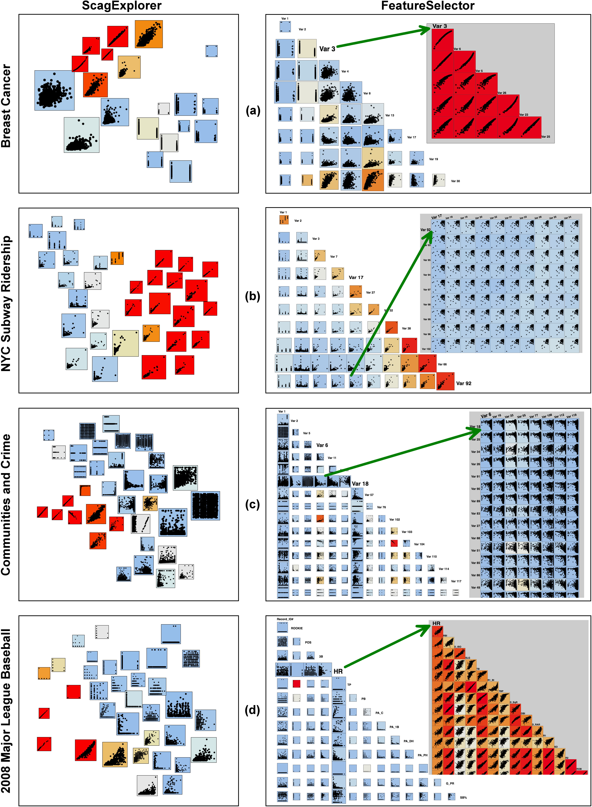

DycomDetector: Topic Modeling using Community Detection in Dynamic Networks
PacificVis 2018, Online Submission #1138
1. Text analytics
Figure~\ref{fig:Figure9}(b) and (c) depict selecting a scatterplot (origins of green arrows). In this case, a full grid layout shows all possible 2D projections of two clusters (row and column) in the main SPLOM. This allows analysts to compare pairwise projections of variables across clusters. The first variables (of each row and column) in secondary grid layouts are the leading variables from the row and column clusters of selected scatterplots (\textit{Var 17} vs. \textit{Var 92} in Figure~\ref{fig:Figure9}(b) and \textit{Var 6} vs. \textit{Var 18} in Figure~\ref{fig:Figure9}(c)). These leading variables are highlighted in bold. The consistent patterns of these pairwise projections explain why they should be grouped together. This is true from both row and column perspectives. Variables on rows or columns in the secondary layouts are considered redundant and therefore their details should be hidden in the main SPLOM (the main SPLOM contains only the representative variables). In other words, all scatterplots in these secondary grid layout are represented as a single cell (the origin of each green arrows) in the clustered SPLOM.
Scatterplots in the secondary (or ``details on demand'') views in \textit{ScagExplorer} may come everywhere in the original SPLOM as depicted in Figure 8 of the \textit{ScagExplorer} paper~\cite{Dang2014ScagExplorer}. In contrast, scatterplots in the \theName{} secondary views come from rows and columns in the input SPLOM (the first SPLOM in Figure~\ref{fig:teaser}). Consequently, \theName{} allows users to rapidly discern the relation between prototypical variables and so put the focus on analyzing the original variables. This feature is beneficial in many application domains, such as chemistry or biology where working directly on original variables may be more valuable (compared to individual projections).
